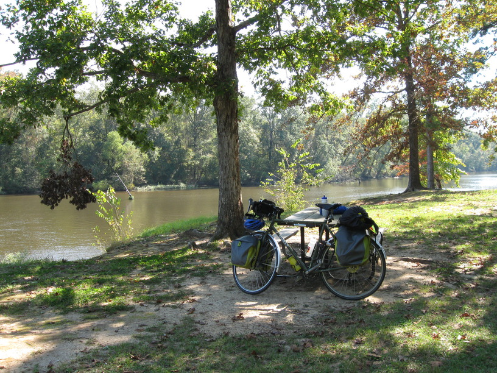
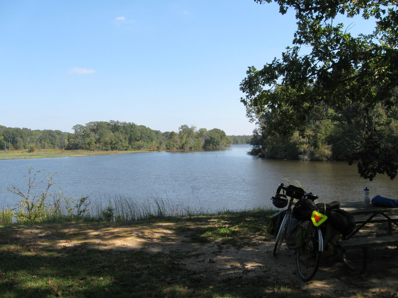

21 Oct 2008, Brandon, MS
Another uneventful day. I got a slightly faster start than yesterday. While heating up my breakfast my fuel ran out, and my food was also running low. I was in Kosciusko, a town of about 7,000, so I could go to the grocery before I started out for the day, or I could wait for evening when I'd be in the Jackson area. Since I had enough to eat for lunch, and I knew I'd have to get fuel in Jackson anyway I decided to wait. That turned out to be a wise choice, because my campsite tonight is across the street from a Kroger, so I went over & stocked up big time. I've also found a store that carries my fuel, and I'll swing by there tomorrow. I also stopped for BBQ on my way in here. Mmm . . .

